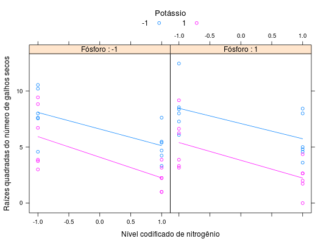

Experimento fatorial 2 \(\times\) 2 \(\times\) 2 de adubação NPK no cafeeiro feito por Malavolta et al. (1958). Foram contados os galhos secos de 4 pés de café por parcela. Dos números obtidos extraiu-se a raiz quadrada, portanto, para ter a variável original de contagem tem-se que elevar aos valores ao quadrado.
Um data.frame com 48 observações e 5 variáveis, em que
blocoNPKquadPIMENTEL-GOMES (2009), Tabela 7.9.1, pág. 137.
Malavolta, E.; Pimentel-Gomes, F.; Coury, T. Estudos sobre a alimentação mineral do cafeeiro (Coffea arabica L., Variedade Bourbon Vermelho). Piracicaba, 1958.
library(lattice) data(PimentelTb7.9.1)#> Warning: data set ‘PimentelTb7.9.1’ not foundstr(PimentelTb7.9.1)#> 'data.frame': 48 obs. of 5 variables: #> $ bloco: Factor w/ 6 levels "1","2","3","4",..: 1 1 1 1 1 1 1 1 2 2 ... #> $ N : int -1 1 -1 -1 1 1 -1 1 -1 1 ... #> $ P : int -1 -1 1 -1 1 -1 1 1 -1 -1 ... #> $ K : int -1 -1 -1 1 -1 1 1 1 -1 -1 ... #> $ quad : num 10.2 5.39 8.54 8.83 8.43 2.24 6.63 4.36 7.55 7.62 ...ftable(xtabs(~N + P + K, data = PimentelTb7.9.1))#> K -1 1 #> N P #> -1 -1 6 6 #> 1 6 6 #> 1 -1 6 6 #> 1 6 6xyplot(quad ~ N | factor(P), groups = K, data = PimentelTb7.9.1, type = c("p", "a"), xlab = "Nível codificado de nitrogênio", ylab = "Raízes quadradas do número de galhos secos", auto.key = list(title = "Potássio", cex.title = 1.1, columns = 2), strip = strip.custom(strip.names = TRUE, var.name = "Fósforo"))